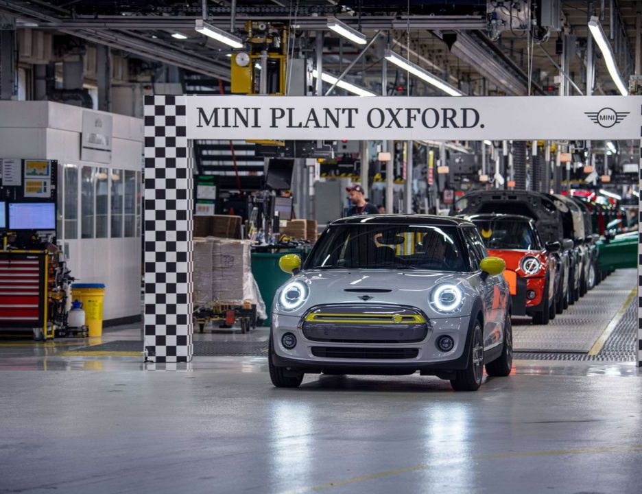
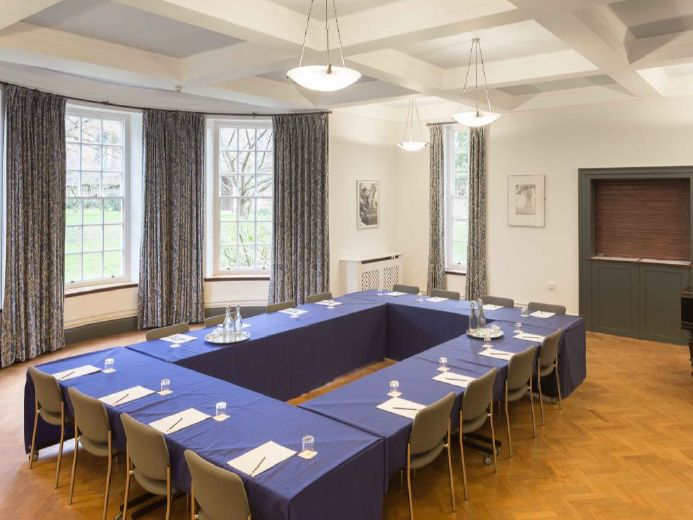
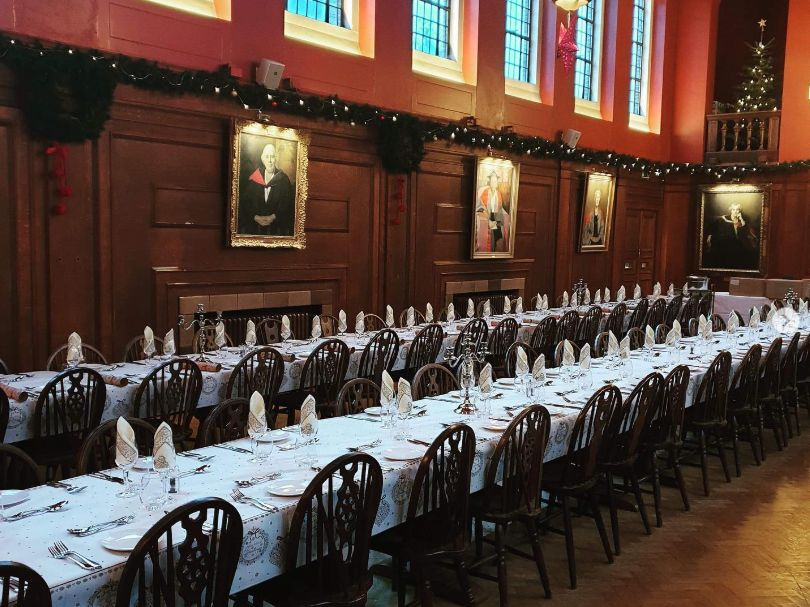
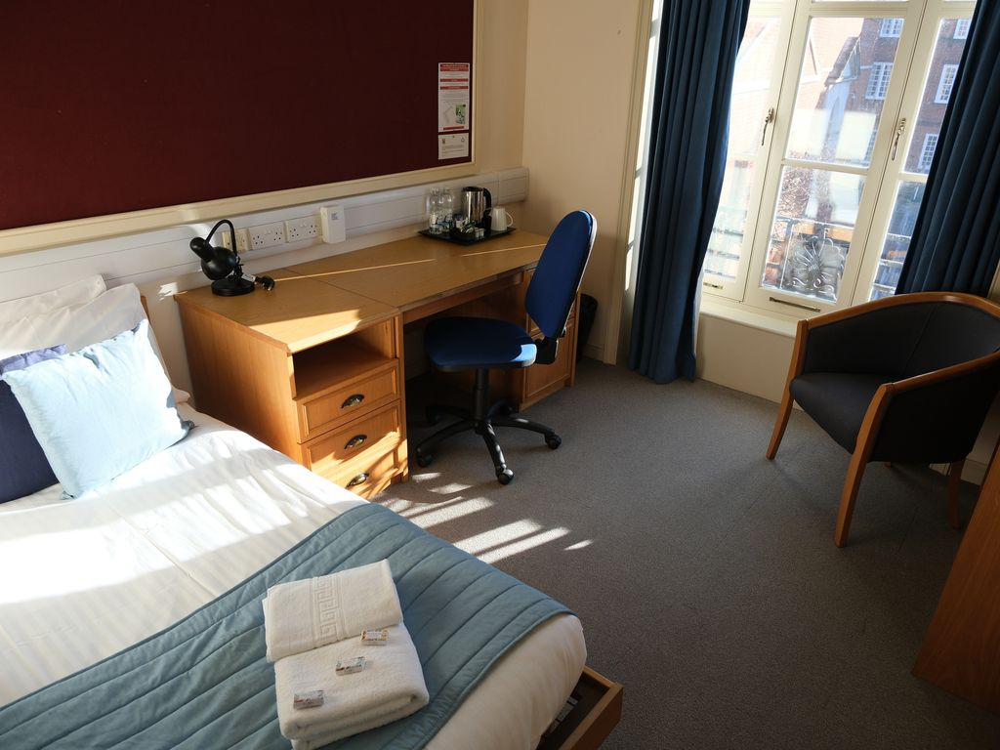
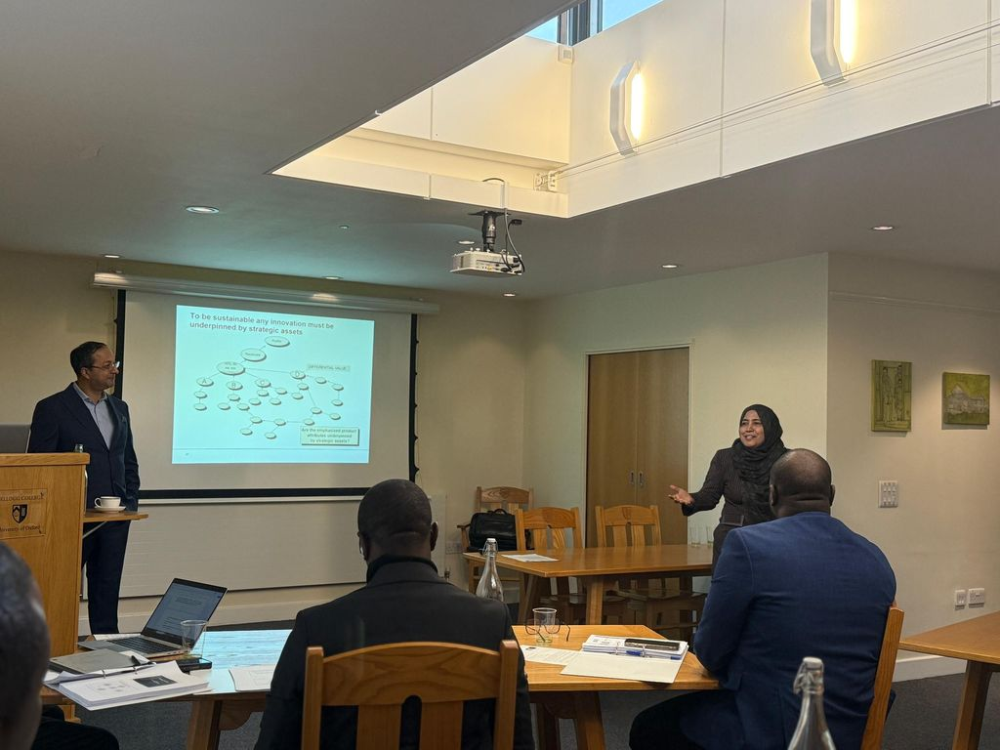
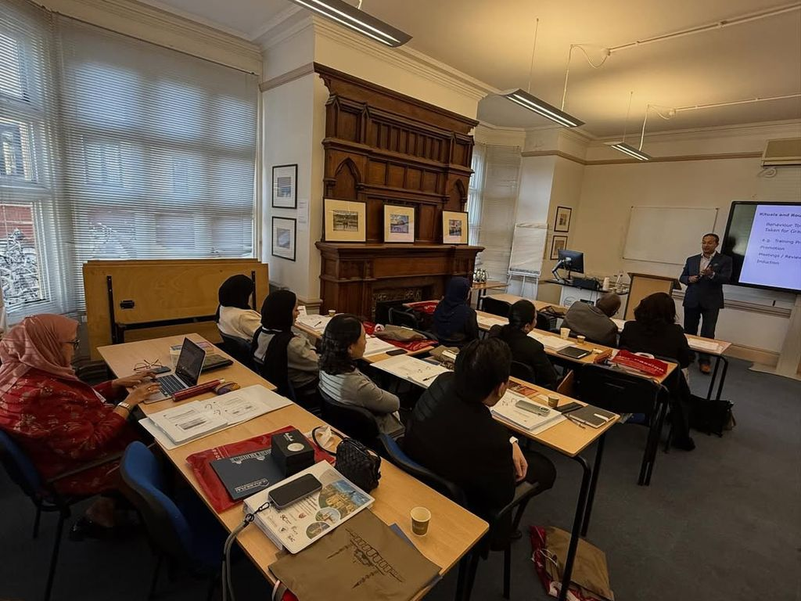
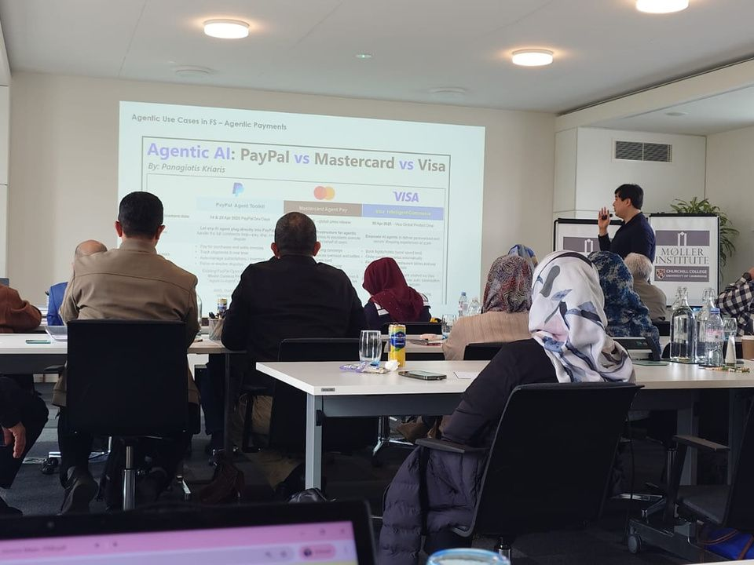

Broaden your perspective
Explore how global shifts, innovation and ethical questions influence the choices SME leaders make.
Step away from the everyday. Explore new perspectives on leadership, strategy and growth in two extraordinary centres of learning.
For SME owners, entrepreneurs and senior business leaders.
Running an SME takes conviction. Leading its next chapter takes perspective. This programme brings business leaders together for five days of lectures, thoughtful discussion and scheduled visits in Oxford and Cambridge.
Based at Lady Margaret Hall, University of Oxford, you will explore contemporary business challenges, exchange experiences with peers and consider what fresh thinking could mean for your own organisation.
A focused week away from daily demands, with space to ask better questions and reflect on the way forward.
An opportunity to connect your business experience with new ideas, new people and a wider world.
Explore how global shifts, innovation and ethical questions influence the choices SME leaders make.
Engage with research-informed ideas and consider different approaches to familiar business challenges.
Make time to examine your strategy, priorities and opportunities for responsible growth.
Share experience and build relationships with fellow entrepreneurs and senior business leaders.
Designed to encourage reflection and practical application. Individual learning and business outcomes will vary.
Assess leadership choices through an ethical and strategic lens.
Explore innovation, entrepreneurship and alternative-finance perspectives.
Connect insights from academic discussion with real-world business practice.
Identify questions and priorities to take back to your own organisation.
Explore strategic leadership, ethical decision-making and the challenges of leading a growing SME in an interconnected world.
Perspectives spanning leadership, strategy, entrepreneurship and the evolving world of finance.
Strategic leadership & global innovation
Geopolitical risk & business strategy
Entrepreneurship & digital ecosystems
Purpose-led business & social impact
Entrepreneurial finance & microequity
Alternative finance & financial innovation
Digital marketing & consumer behaviour
High-performance teams & leading change
Entrepreneurship programmes & venture building
Topic labels are suggested themes reflecting professional areas, not confirmed lecture titles. Speakers and topics may change; final sessions are subject to organiser confirmation.
Scheduled visits bring another dimension to the learning experience, connecting industry, entrepreneurship and the distinctive setting of Cambridge.
An industry perspective on manufacturing and operational practice.
A proposed encounter with Oxford’s entrepreneurial environment.
A proposed cultural visit and a traditional experience on the River Cam.
All visits are subject to change, availability and confirmation. Access is not guaranteed.

Set within the University of Oxford, Lady Margaret Hall provides a collegiate setting for your week of learning, conversation and reflection.
College accommodation, not a hotel. Six nights are included, from 13 to 19 December. Ask the organisers about room types, facilities and accessibility requirements before registration.



For your own free time, before or after the programme: a starting point for exploring Oxford and Cambridge independently.
13–19 December 2026
Lady Margaret Hall, University of Oxford
Contact the organisers for availability, payment arrangements and cancellation terms.
HRD Corp claimability is currently being processed. Subject to HRD Corp approval, eligible employers may be able to claim programme fees under applicable HRD Corp schemes. Further details will be provided once approval has been confirmed.
Excellent-standard
satisfaction
Would recommend
the programme
Organiser-reported feedback from prior programmes in 2025/2026, not the December 2026 cohort. Past feedback does not guarantee any participant’s experience or outcomes.
The programme content is comprehensive, well-organised, and relevant to my work.
The speakers were incredibly knowledgeable, and the insights shared were directly applicable to my role.
This programme has provided me with valuable perspectives and practical tools to apply in my organisation.
Delegates, The Oxford and Cambridge Strategic Leadership Programme for C-Level Executives (2025/2026). Organiser-reported.



Sessions from previous programmes.
For anything else, the programme team is just a conversation away.
Speak with the teamExplore whether this programme is right for you. Contact our team to discuss your questions and the next steps for registration.
An enquiry is a conversation, not a commitment. No payment is collected on this page.